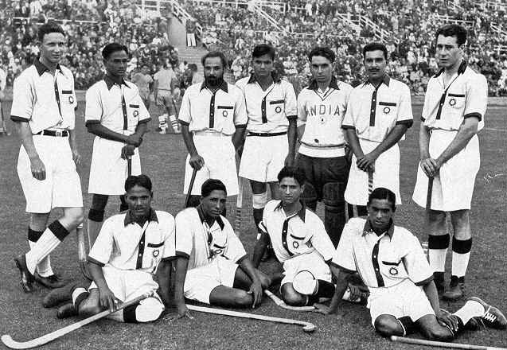
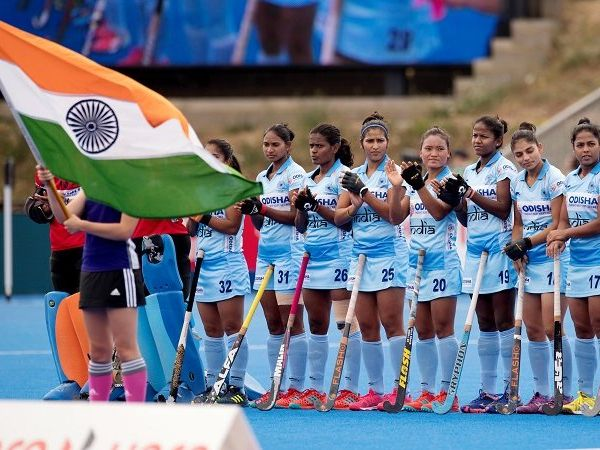
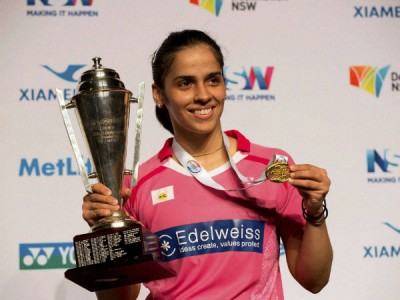
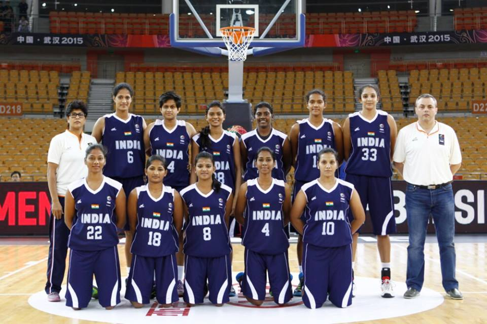
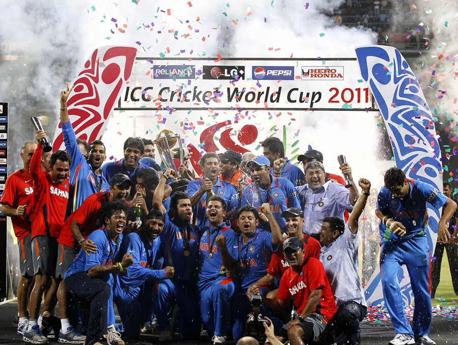
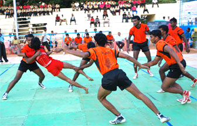
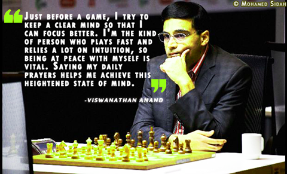
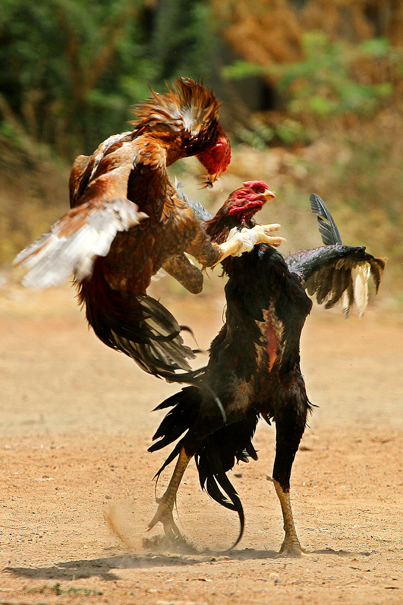
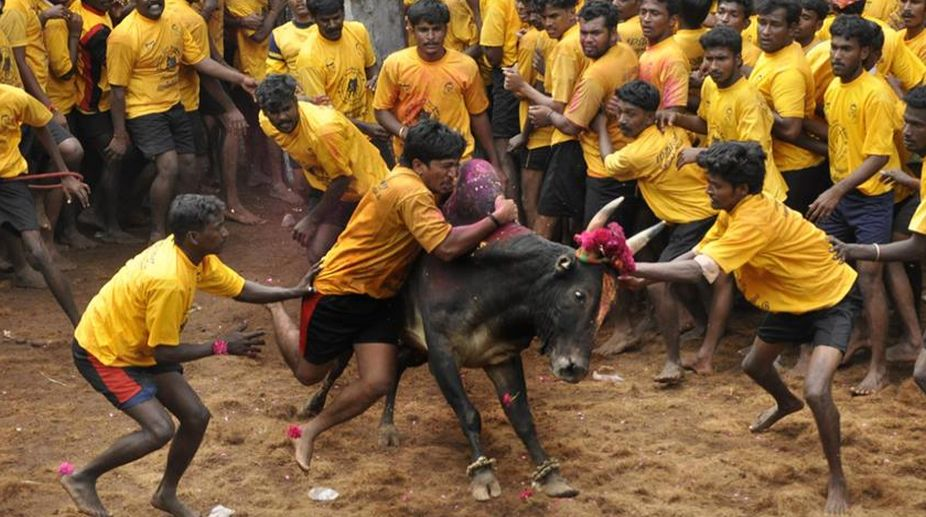
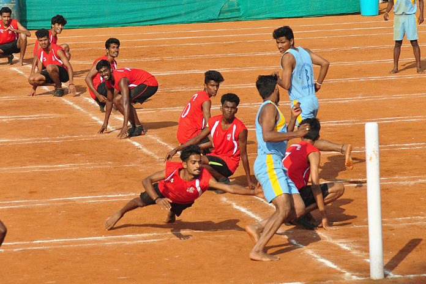

Back To Main Menu
Sports in india
India has a great tradition of sports, and is greatly influenced by the British presence in India in the 18th and 19th century. Cricket is undoubtedly the most popular sport, but in such a large and populous country there are many other sports that are played by a lot of people.
India is one of the largest country in the world in both area and population. India is also one of the few countries that have retained the popularity of their indigenous games among its people. Games like gilli-danda, kabaddi, pehlwani and kho kho. India is also where some of the oldest forms of martial arts originated like musti yuddha, kalerippayattu, silambam as well as marma adi. India also have a few board games, most popular of which is the chaturanga, believed to be the origin of modern chess. This is further reinforced with the rise of a number of chess grandmasters from the country.
However, modern games have also taken over the Indian scene with cricket being the most popular. India have also hosted several sporting events such as the Asian Games (1951 and 1982), Cricket World Cup (1987, 1996 and 2011), Hockey World Cup and the Commonwealth Games (2010).
India has hosted and co-hosted several international sporting events, most notably the 1987, 1996 and 2011 Cricket World Cups, the 1951 and 1982 Asian Games, the 2010 Commonwealth Games, and the 2017 FIFA U-17 World Cup.
Domestic professional sports leagues in the country include the Indian Premier League (Twenty20 cricket), the I-League and the Indian Super League (football), the Pro Kabaddi League (kabaddi), the Hockey India League (hockey), Premier Badminton League (badminton), the Pro Wrestling League (wrestling), the Ultimate Table Tennis league (table tennis), and the Pro Volleyball League (volleyball).
Major international sporting events annually held in India include the Chennai Open in tennis, the Indian Open in golf, and the India Open in badminton.
The Rajiv Gandhi Khel Ratna is India's highest award for achievement in sports, while the Dronacharya Award is awarded for excellence in coaching.
Chapter 1: Olympic Sports
- Hockey
Field Hockey is a popular sport in India. Until the mid-1970s, India men's team dominated international field hockey, winning seven Olympic gold medals and won the 1975 Men's Hockey World Cup. Since then, barring a gold medal at the 1980 Olympics, India's performance in field hockey has been dismal, as Australia, Netherlands and Germany improved. Its decline is also due to the change in rules of the game, introduction of artificial turf, and internal politics in Indian field hockey bodies. The popularity of field hockey has also declined massively parallel to the decline of the Indian hockey team. In recent years, the standard of Indian hockey has deteriorated, with the Men's team not qualifying for the 2008 Olympics and finishing last in the 2012 Olympics. Since 2014, the men's team has improved, becoming runners up at the 2014 Commonwealth Games, then winning 2014 Asian Games gold and 2017 Men's Hockey Asia Cup, finally restoring dominance in Asia. Before that India lost to Belgium in the quarter final of 2016 Rio Olympics. Currently, the Indian men's team is 5th in the rankings of the Fédération Internationale de Hockey sur Gazon (FIH, English:International Hockey Federation), the international governing body of field hockey and indoor field hockey.[45]
India has hosted three Men's Hockey World Cups–one in 1982 in Mumbai, another in 2010 in Delhi, where they finished fifth and eighth respectively, and the third at Bhubaneswar in 2018. India also hosted the annual Hockey Champions Trophy in 1996, 2005 2014 and 2016 Until 2008, the Indian Hockey Federation (IHF) was the apex body for hockey in the country. However, following revelations of corruption and other scandals in the IHF, the federation was dissolved and de-recognised, and a new apex body for Indian hockey called Hockey India (HI) was formed on 20 May 2009, with support from the IOA and former hockey players. HI, recognised by the International Hockey Federation (FIH), has the sole mandate to govern and conduct all activities for both men's and women's field hockey in India. Although the IHF was reinstated in 2010,[46] it is not recognised by the FIH. The IHF conducts a franchise-based tournament called World Series Hockey (WSH), with its first season conducted in 2012. However, it is not approved by HI or the FIH.

First Indian Men Hockey Team

Indian women hockey team 2020
- Badminton
Badminton is played widely in India and it is one of the most popular sports in India.Badminton is a fast growing sport in India. Badminton's popularity has grown in recent years. Indian shuttlers Saina Nehwal, K. Srikanth and P.V. Sindhu are ranked amongst top-10 in current BWF ranking. Prakash Padukone was the first player from India to achieve world no.1 spot in the game and after him K. Srikanth made it to the top spot as male player for second time in April 2018[52] and Saina Nehwal is the first female player from India to achieve World no.1 spot in April 2015.[53] The most successful doubles player from India is Jwala Gutta, who is the only Indian to have been ranked in the top-10 of two categories. She peaked at no. 6 with Valiyaveetil Diju in mixed doubles and at no. 10 with Ashwini Ponnappa in women's doubles.[54] Other successful players include Aparna Popat, Pullela Gopichand, Syed Modi, Chetan Anand, Parupalli Kashyap, Prannoy Kumar, Ashwini Ponnappa, Chirag Shetty, Satwiksairaj Rankireddy and N. Sikki Reddy.
Padukone and Gopichand, both won the All England Open in 1980 and 2001 respectively making them the only Indians to ever win the prestigious title. At the 2012 London Olympic Games, Nehwal won the bronze medal in the individual women's competition, the first for the country in badminton and in the next edition at Rio 2016 P.V.Sindhu won silver in Women's singles, the second medal in badminton for India. India has won medals at the BWF World Championships as well, with Padukone winning in 1982. The doubles pairing of Gutta and Ponnappa became the first women to win the medal when they won the bronze in 2011. Sindhu won consecutive medals at 2013 and 2014 editions. Nehwal won a silver at 2015 Championships. Saina is the only gold medalist for India in BWF World Junior Championships, won in 2008, where as Sindhu and Lakshya Sen are the only gold medalists in Badminton Asia Junior Championships in their respective category for the country, won in 2012 and 2018.
- 
Saina Nehwal Badminton Champion
- Basketball
Basketball is a popular sport in India, played in almost every school, although very few people follow it professionally. India has both men's and women's national basketball teams. Both teams have hired head coaches who have worked extensively with NBA players and now aim to popularise the game in India.[57] Satnam Singh Bhamara officially marks the first player from India to be selected in the NBA by being taken by the Dallas Mavericks as the 52nd pick of the 2015 NBA draft, as well as the first player to be drafted straight out of high school as a postgraduate.
The Young Cagers, as the national team is nicknamed, made one Olympic appearance in basketball, and appeared 20 times in the Asian Championship. India is currently ranked 58th in the world in basketball. The Indian national team had its best result at the 1975 Asian Championship, when the team finished ahead of teams including the Philippines, one of Asia's basketball strongholds. Internationally, one of the most recognised Indian basketball players has been Sozhasingarayer Robinson.[58] Affiliated into the International Basketball Federation (FIBA) since 1936, India has one of Asia's longest basketball traditions.

National basketball Team at the 2009 Asian indoor games Vietnam
Chapter 2: Non-Olympic Sports
- Cricket
Cricket is a bat-and-ball game played between two teams of eleven players on a field at the centre of which is a 20-metre (22-yard) pitch with a wicket at each end, each comprising two bails balanced on three stumps. The batting side scores runs by striking the ball bowled at the wicket with the bat, while the bowling and fielding side tries to prevent this and dismiss each player (so they are "out"). Means of dismissal include being bowled, when the ball hits the stumps and dislodges the bails, and by the fielding side catching the ball after it is hit by the bat, but before it hits the ground. When ten players have been dismissed, the innings ends and the teams swap roles. The game is adjudicated by two umpires, aided by a third umpire and match referee in international matches. They communicate with two off-field scorers who record the match's statistical information.
There are various formats ranging from Twenty20, played over a few hours with each team batting for a single innings of 20 overs, to Test matches, played over five days with unlimited overs and the teams each batting for two innings of unlimited length. Traditionally cricketers play in all-white kit, but in limited overs cricket they wear club or team colours. In addition to the basic kit, some players wear protective gear to prevent injury caused by the ball, which is a hard, solid spheroid made of compressed leather with a slightly raised sewn seam enclosing a cork core which is layered with tightly wound string.

Stadium Under flood lights during World Cup ICC T20 2016
The 2011 ICC Cricket World Cup was the tenth Cricket World Cup. It was played in India, Sri Lanka, and (for the first time) Bangladesh. India won the tournament, defeating Sri Lanka by 6 wickets in the final at Wankhede Stadium in Mumbai, thus becoming the first country to win the Cricket World Cup final on home soil.India's Yuvraj Singh was declared the man of the tournament.[3] This was the first time in World Cup history that two Asian teams had appeared in the final. It was also the first time since the 1992 World Cup that the final match did not feature Australia.

ICC World Cup 2011 Winners
- Kabaddi
Kabaddi, is a contact sport, native to the Indian subcontinent. It is one of the most popular sports in India, played mainly among people in villages. India has taken part in four Asian Games in kabaddi, and won gold in all of them. Four forms of kabaddi played in India are Amar, Suranjeevi, huttuttoo, and Gaminee. Amar is generally played in Punjab, Haryana, the United States, Canada, and other parts of the world, mostly by Punjabi sportsmen. Suranjeevi is the most played form of kabaddi in India and the world. This is the form used in international matches generally and played in Asian Games. Huttuttoo was played by men in Maharashtra State.

Indian Kabbadi Team At the asian games
- Chess
Chess has risen in popularity in India in the last few decades primarily due to chess Grandmaster and former World Champion Viswanathan Anand.The earliest precursor of modern chess is a game called chaturanga, which flourished in India by the 6th century, and is the earliest known game to have two essential features found in all later chess variations—different pieces having different powers (which was not the case with checkers and Go), and victory depending on the fate of one piece, the king of modern chess. A common theory is that India's development of the board, and chess, was likely due to India's mathematical enlightenment involving the creation of the number zero.Other game pieces (speculatively called "chess pieces") uncovered in archaeological findings are considered as coming from other, distantly related board games, which may have had boards of 100 squares or more.
Viswanathan Anand (born December 11, 1969), known popularly as "Vishy", is an Indian chess Grandmaster and former World Chess Champion. Anand was the first Indian to win the FIDE World Chess Championship in 2000 and since then he has won this Championship in 2007, 2008, 2010 and 2012. He remained the undisputed World Champion from 2007 to 2013. Anand was the FIDE World Rapid Chess Champion in 2003, and is widely considered the strongest rapid player of his generation. In the World Chess Championship 2013 he lost to challenger Magnus Carlsen. He is, all in all, a great chess player.

Vishwanathan Anand
Chapter 3: Traditional and regional sports
- Seval Sandai
Seval Sandai or Seval Porr (cockfighting) is a popular rural sport. Three or four-inch blades are attached to the cocks' feet and the winner is decided after three or four rounds of no-holds-barred fighting. The sport involves major gambling in recent times.Though times are changing, and modern concepts are taking over our lifestyle, some traditions just don’t die out. Similar is the case for sports in the state of Tamil Nadu; though modern sports like football, cricket and tennis that have foreign origins are being ardently followed by the common Tamilian, ancient sporting activities like Seval Sandai are still popular among the rural communities.
Seval Sandai is basically cockfighting. It’s a blood sport that has a history of over 6000 years as can be seen from documentations, seals and decorations on walls and pottery among other things. It has been mentioned in ancient literatures like Kattu Seval Sastiram, Manu Needhi Sastiram and Sangam literatures. The origins of this blood sport were in southern Asian countries with its being a favorite pastime of ancient warriors during the peace times.
It’s referred to as a blood sport due to the wounds the cocks/roosters inflict on each other; further injury is promoted by attaching 2-4 inch long metal spurs to the natural spurs of the cocks. Some fights end in death of one rooster or at least some serious injuries. In earlier days silver spurs were used and interestingly enough, there are many cases were the owners die of wounds inflicted by their own roosters!

Indian Traditional Cock fight
- Jalikattu
Jallikattu, a popular bull taming sport held during Pongal, is set to take place in Madurai district. The three main venues where the sport will take place in are Palamedu, Alanganallur and Avaniapuram. Preparations have started for the conduct of jallikattu, involving the departments of police, animal husbandry, public works, revenue, district administration, and local organising committees.
Come Pongal, the streets of the three towns will be a riot of colours. Locals and tourists will throng the towns near Madurai to catch a glimpse of the world famous Jallikattu.
The sport requires fighters to pounce on a running bull, try to hold on to its hump and move along with the animal without falling or getting hurt. It requires quick reflexes and a fleet foot to tame the bull, which will try to get away, shake off the fighter and, at times, stamp or gore the fallen participants

Jalikattu Sport In India
- Kho-Kho
Kho Kho is a popular tag game invented in Maharashtra, India. It is played by teams of 12 nominated players out of fifteen, of which nine enter the field who sit on their knees (chasing team), and 3 extra (defending team) who try to avoid being touched by members of the opposing team. It is one of the two most popular traditional tag games in the Indian subcontinent, the other being Kabaddi.[1] The sport is widely played across South Asia and has a strong presence in South Africa and England.
A Kho kho playing field is rectangular. It is 27 by 16 metres (89 ft × 52 ft) in length nio. In the middle of these two rectangles, there are two wooden poles. The central lane's dimensions are 24 m x 30 cm. There are eight cross lanes which lie across the central lane, whose dimensions are 16 m x 35 cm. It makes the small rectangles and each of them are 16 m x 2.3 m (the two rectangles of near by the wooden poles are 2.55 m wide), at right angles to the central lane and divided equally into two parts of 7.85 m (25.8 ft) each by the central lane. At the end of the central lane, the free zone tangent to the post-line, two smooth wooden posts are fixed, 120 cm - 125 cm high from the ground, and their circumference is 28.25 - 31.4 cms. The equipment used in Kho kho are poles/post, strings, metallic measuring tape, lime powder, wire nails, two watches, types of rings having inner circumference of 28.25 and 31.4 cms, score shots (like a whistle, for instance), and equipment to record the results. However, for unofficial games, only lime powder (or any substitute) may be used as long as the cross lanes, centre lane and field boundaries are clearly distinguished. The strings, as well as the rings, are for the sole purpose of properly demarcating the same.

College Students Playing Kho Kho